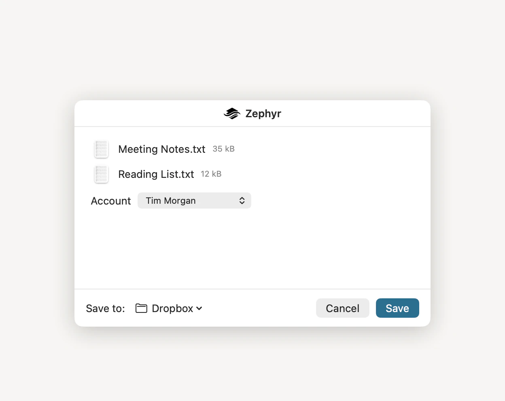

Überall dort, wo macOS eine Teilen-Taste anbietet, ist Zephyr eines der Ziele. Die Datei wird in deine Dropbox hochgeladen, ohne dass du zum Finder wechseln musst.

Klicke in der App, die du gerade verwendest, auf die Teilen-Taste oder wähle Ablage ▸ Teilen.
Wähle Zephyr.
Hinweis: Wenn Zephyr nicht in der Liste steht, wähle unten im Teilen-Menü „Erweiterungen bearbeiten …“ und schalte es ein.
Wähle im Menü „Sichern in:“ aus, wohin die Datei soll. Es beginnt mit dem Ordner, an den du zuletzt etwas gesendet hast, und bietet neben Dropbox, der obersten Ebene deines Kontos, bis zu fünf zuletzt verwendete Ordner an.
Für jeden anderen Ort wähle „Anderer Ordner …“ und gib einen beliebigen Teil des Ordnernamens in „Ordner filtern“ ein, um die Liste einzugrenzen.
Wenn du mehr als ein Konto verknüpft hast, wähle im Menü „Konto“ aus, welches verwendet werden soll. Bei nur einem Konto gibt es nichts auszuwählen, daher erscheint dann kein Menü.
Klicke auf „Sichern“.
Das Fenster meldet jede Datei, sobald sie übertragen wird, und schließt sich, wenn die letzte angekommen ist.
Ordner. Das Teilen-Menü nimmt nur Dateien an; ziehe einen Ordner stattdessen in der Finder-Seitenleiste auf deine Dropbox.
Alles, was du teilst, bevor du ein Konto verknüpft hast. Das Fenster weist darauf hin und verweist dich auf Zephyr, um zuerst eines zu verknüpfen.
Lässt sich ein Teil dessen, was eine App übergibt, nicht hochladen, listet das Fenster auf, was es übersprungen hat, und lädt den Rest hoch.
Wenn du eine Datei in der Finder-Seitenleiste auf deine Dropbox ziehst, passiert dasselbe. Das funktioniert auch mit Ordnern und ist meist schneller, wenn der Finder ohnehin schon geöffnet ist.